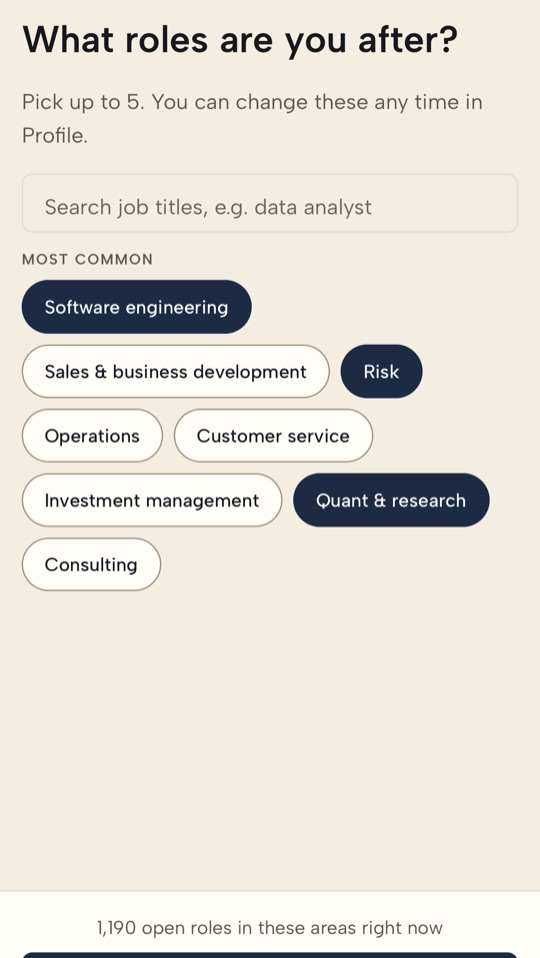
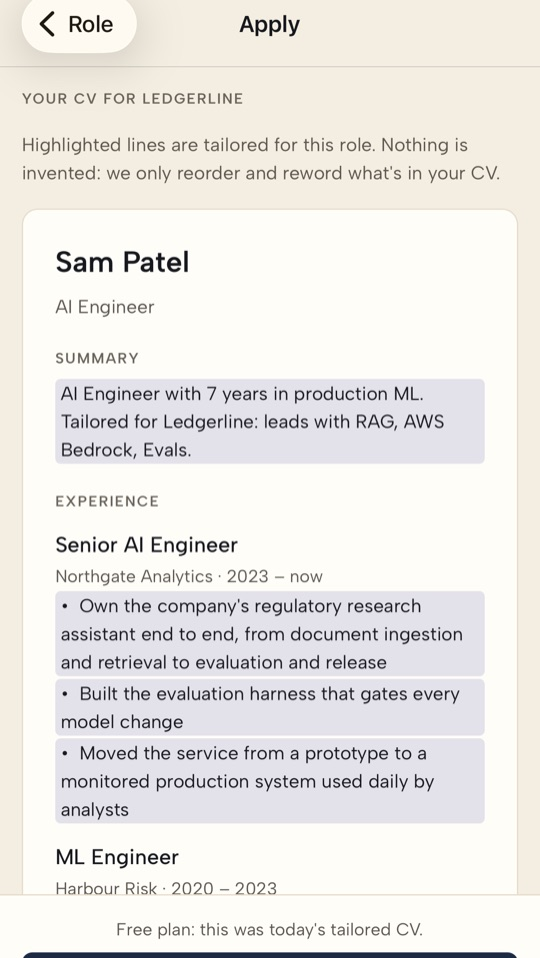

How it works
Your job hunt, minus the busywork.
No more forty open tabs. Just the new roles that fit, and a quick way through them.
Step 1Tell it what you’re after
Pick your roles, your level and where you’d like to work. London, Manchester, or your own sofa.

Step 2Swipe through what’s new
Fresh matches land every afternoon. Swipe right to shortlist, left to pass. That’s it.

Step 3Tailor your CV, then apply
AI tailors your CV to the role. Then you apply on the employer’s own page, the way they ask. JTBF never applies for you.

Step 4Keep track
Every application and its stage in one place, all the way to the offer.

Screens from the JTBF app, on sample roles from made-up companies.
Pay, up front
Salary ranges on every role. Where a firm doesn’t post one, you see an estimate, clearly labelled.
Follow the firms you love
Follow a company and every new role it posts comes straight to you.
About 260 firms, watched
We read their careers pages so you don’t have to.
Who it’s for
Anyone who wants in at a finance or fintech firm.
Analyst or engineer, operations or design, first job or fifth: whatever the role, if the firm is in finance, JTBF is watching its careers page.
- Banks
- Hedge funds
- Quant firms
- Private equity
- Payments
- Neobanks
- Crypto
- London and the UK first
- US roles too
- Remote roles too
Plans
Free to start. Pro when you mean business.
We sell Pro in six-month stretches, not years. Here’s hoping you won’t need all of it.
Free
For as long as you like.
- 2 roles picked for you each day, plus a count of the rest
- 1 AI-tailored CV a day
- Follow up to 2 companies
- Track every application
Pro Launch offer
A launch offer for early sign-ups. Join the waitlist and we’ll email you the details when JTBF opens.
- Every role picked for you, as soon as JTBF finds it
- An AI-tailored CV for every role, no daily limit
- Follow as many companies as you like
- Track every application
Prices arrive with the app. Subscriptions run through the App Store or Google Play.Join the waitlist
Questions
Good questions, straight answers.
Does JTBF apply for me?
No, and that’s on purpose. JTBF tailors your CV to the role, then sends you to the employer’s own page to apply the way they ask. Every application stays yours.
Where do the roles come from?
Straight from the careers pages of about 260 banks, hedge funds, quant firms, private equity firms, payments companies, neobanks and crypto firms. JTBF checks them for you and brings you what’s new each afternoon.
Is the salary real?
Where a firm posts a range, you see it. Where it doesn’t, we show an estimated range and label it as an estimate, so you always know which is which.
Which locations does it cover?
London and the UK first, plus roles in the US and remote roles.
When can I get it?
In January 2027, on the App Store and Google Play. Join the waitlist and we’ll email you when it’s out.
What happens to my email?
We use it to tell you when JTBF launches and about the launch offer, and nothing else. Here’s the detail.
Privacy
Your email, plainly.
The waitlist keeps as little as it can, for as short a time as it can.
- What we collect
- Your email address, and whether you signed up on the English or the Chinese page, so we write to you in the right language.
- Why
- To tell you when JTBF launches and about the launch offer. We won’t send you anything else or share your address with anyone for their marketing.
- Who handles it
- Woven Studio is responsible for your data. We use Kit (kit.com) to store the list and send the emails. Kit is a US company, so your address may be stored in the United States.
- Our basis
- Your consent, which you give by joining. You can withdraw it at any time by unsubscribing.
- How long we keep it
- Until three months after JTBF launches, or until you unsubscribe, whichever comes first. Then we delete it.
- Your rights
- Every email has an unsubscribe link. To see, correct or delete what we hold, email studio.woven.london@gmail.com. If you’re unhappy with how we handle it, you can complain to the Information Commissioner’s Office.